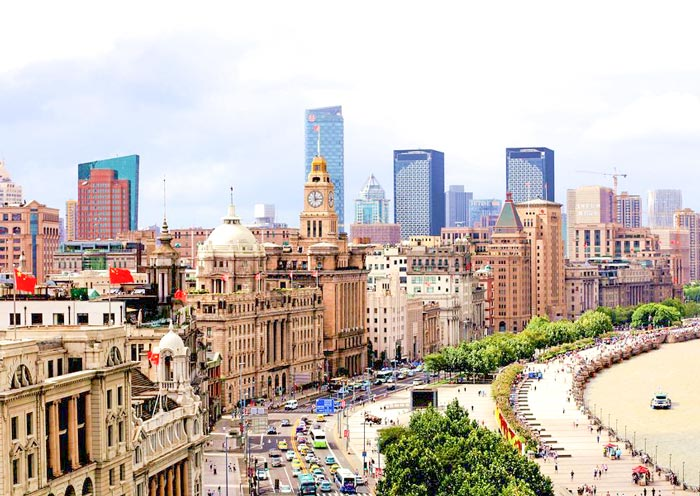
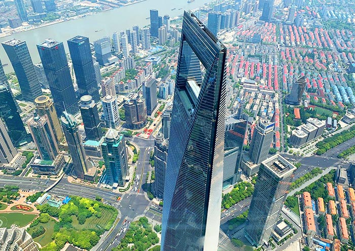
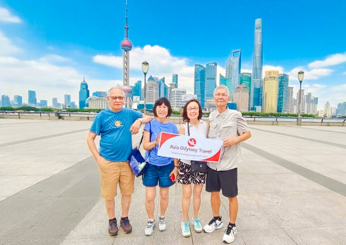

Discover Shanghai on two wheels! This 3-hour guided biking tour lets you experience the city up close and personal at a relaxed pace. Choose from two exciting routes: the modern Huangpu River Waterfront Trail with stunning Pudong skyline views, or the historic French Concession & Shikumen ride through tree-lined streets and charming alleyways.
Bikes, helmets, and a knowledgeable English-speaking guide are all included. Suitable for ages 12-75 with basic biking skills.
Discover Shanghai like a local on this 3-hour biking adventure through the city's most fascinating neighborhoods. Cycling is the perfect way to explore Shanghai — you'll cover more ground than walking while staying close enough to feel the city's energy, smell the street food, and discover hidden lanes that cars can't access.
Starting from the iconic Bund, you'll ride through the historic French Concession with its tree-lined avenues and Art Deco villas, explore the narrow alleyways (lòngtáng) of the Old City, and pedal along the Huangpu River. Your guide leads the way on a carefully planned route that avoids major roads and takes you through the most scenic and authentic parts of Shanghai. Bikes, helmets, and bottled water are all provided.
Cycle along the historic Bund promenade, passing colonial-era buildings with the stunning Pudong skyline as your backdrop.
Pedal through the tree-lined streets of the former French Concession, past historic villas and plane trees that create a natural canopy.
Navigate through narrow Shanghai alleyways (弄堂), discovering hidden temples, local markets, and everyday life away from the tourist crowds.
Ride along the scenic Huangpu River bike path, watching ferries and sightseeing boats pass by as you pedal.
Stop at the best photography spots along the route, including the Bund, Waibaidu Bridge, and the French Concession.
Take a mid-ride break at a charming local café in the French Concession for a refreshing drink and rest.
Start: Near Xupu Bridge. Ride along the flat Huangpu River Greenway through QianTan Park, Expo Site, and HouTan Park. Enjoy spectacular views of the Lujiazui skyline and the Bund. End at Yangpu Bridge.
Highlights: QianTan Park, Expo Site, views of Oriental Pearl Tower, 1862 Old Shipyard.
Start: Xintiandi. Cycle through tree-lined streets of the former French Concession, passing Sinan Mansions (51 historic villas), Fuxing Park, Wukang Road, ending at Tianzifang.
Highlights: Xintiandi, Sinan Mansions, Fuxing Park, Tianzifang, hidden cafes.
Start: The Bund (North Bund). Cycle along the riverfront with the Pudong skyline as your backdrop, cross the historic Waibaidu Bridge (1907), and ride into the lanes (lòngtáng) of the Old City near Yu Garden. Continue along the Huangpu River greenway past the Shanghai Urban Planning Exhibition Center, then loop back through the lively Yuyuan Bazaar district.
Highlights: The Bund promenade, Waibaidu Bridge, Old City lane houses, Yu Garden surroundings, riverside greenway, Oriental Pearl Tower views.
Suitable for ages 12-75 with basic biking skills.
Easy to moderate. Flat terrain on Route A, leisurely pace on Route B.
Tour runs rain or shine. Ponchos provided.
this short, focused tour is a focused experience designed to cover the key highlights in a few hours — ideal if you are short on time or on a stopover.
Yes, all our tours are private. You travel with your own group and a dedicated English-speaking guide — never shared with other travellers.
Absolutely. Every itinerary is fully customizable. Tell us what you most want to see, and we will adjust the tour to your preferences.
For hotels in central Shanghai, door-to-door pickup and drop-off are typically included. Share your hotel details and we will confirm the exact arrangement.
Booking is easy — message us on WhatsApp or email. For most tours no deposit is required and you can pay on the day, with no hidden fees.
Yes. We offer free cancellation up to 48 hours before your scheduled tour, and date or itinerary changes are always welcome.

Quick & Easy 4 HoursShort on time but want to experience the best of Shanghai? This half-day tour is designed

Your Way Flexible DurationThis is the ultimate flexible tour — you decide what you want to see, how long you want to
See Shanghai transform into a glittering wonderland on this enchanting evening tour! As th
Shanghai is a food lover's paradise, and this tour takes you straight to the heart of its
When the sun goes down, Shanghai transforms into a glittering spectacle of neon, lights, a

Modern & Trendy 2 Days / 1 NightDiscover the cutting-edge side of Shanghai on this 2-day modern impression tour. From the
Short on time but want to experience the best of Shanghai? This half-day tour is designed
This is the ultimate flexible tour — you decide what you want to see, how long you want to
See Shanghai transform into a glittering wonderland on this enchanting evening tour! As th
Shanghai is a food lover's paradise, and this tour takes you straight to the heart of its
When the sun goes down, Shanghai transforms into a glittering spectacle of neon, lights, a
Discover the cutting-edge side of Shanghai on this 2-day modern impression tour. From the